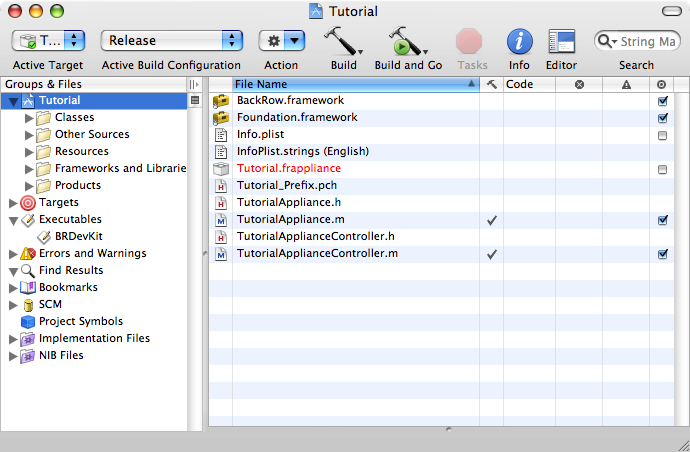
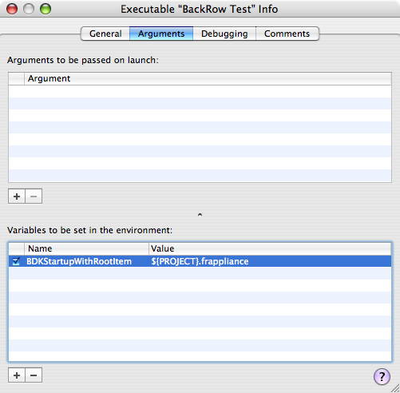

Creating Your First Apple TV Appliance
We will start by creating a new plugin within Xcode using the Apple TV Appliance project template:
Open Xcode, and select File->New Project.
In the New Project window, open the Apple TV group and select Appliance.
When asked for a Project name, enter 'Tutorial' and click OK.
Now you will be presented with the New Project window, which will look something like this:

The initial window for the new project.
Next we will want to setup the project to run the BRDevKit test harness application when we choose to run or debug our project. We can use a special environment variable to make the test harness automatically show the BackRow window at startup with our plugin as its root.
From the Xcode menu, select Project->New Custom Executable…
For the Executable Name, enter 'BackRow Test'.
For the Executable Path, enter '/Developer/Applications/BackRow Test.app'.
In the 'Info' window that appears, ensure that the assigned option for the working directory is set to Build products directory.
Select the Arguments tab.
In the lower half of the window, press '+' to create a new environment variable.
Enter the name as 'BDKStartupWithRootItem'
Enter the value as '${PROJECT}.frappliance'
You should now see something like the following:

The executable settings when using BackRow Test to launch your appliance.
Having completed this procedure, we're now ready to begin writing our plugin.